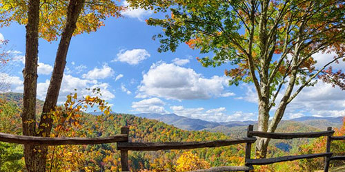

-
Winter
Grand Canyon National Park, Arizona
-
Spring
Glacier National Park, Montana
-
Summer
Arches National Park, Utah
-
Fall
Great Smoky Mountains, N. Carolina and Tennessee
-
Winter
Grand Canyon National Park, Arizona
 GUIDED TOURS
GUIDED TOURS
The Grand Canyon Field Institute offers single and multi-day educational tours at Grand Canyon National Park led by expert instructors while day hiking, backpacking, camping, & whitewater rafting. Topics include geology, ecology, history, archaeology, botany, photography, and more.
Learn MoreDESERT VIEW DRIVE
Desert View Drive is a scenic route to the east of Grand Canyon Village on the South Rim which follows the rim for 25 miles (40 km) out to the Desert View Watchtower and East Entrance. There are six developed canyon viewpoints.
Learn MoreNORTH RIM
The North Rim has a Short Season. Lodging, restaurants and shops are open May 15 through Oct. 15, each year. A worthwhile trip for those who enjoy the road less traveled, the North Rim, or "other side" of the Grand Canyon is visited by only 10% of all Grand Canyon visitors. The North Rim is over 8000 feet/2438 m. in elevation and has one campground operated by the NPS.
Learn More
When You Arrive
Like other national parks, Grand Canyon has seen a dramatic increase in visitation over the last few years. The South Rim experiences crowded conditions during busy periods throughout the year, including spring break, summer, and holiday times during the fall and winter. Here are some tips to avoid the crowds.
More Than A View
Unique combinations of geologic color and erosional forms decorate a canyon that is 277 river miles (446km) long, up to 18 miles (29km) wide, and a mile (1.6km) deep. Grand Canyon overwhelms our senses through its immense size.
Getting In Touch
We receive a lot of emails requesting information that is available on our website. Please browse the topics listed in the before submitting your message, and keep in mind that our site contains far more information than we can email you. Thanks!
By Phone
Visitor Information: (928) 638-7888
Backcountry Information Center:
(928) 638-7875
River Permits Office: (800) 959-9164 -
Spring
Glacier National Park, Montana
CROWN OF THE CONTINENT
As the Crown of the Continent, Glacier is the headwaters for streams that flow to the Pacific Ocean, the Gulf of Mexico, and to Hudson's Bay. What happens here affects waters in a huge section of North America. Due to a detection of invasive mussel populations in central Montana, Glacier has closed all park waters to motorized and trailered watercraft until further notice.
Learn MoreBACKCOUNTRY CAMPING
Glacier's backcountry camping program is designed to minimize resource impacts while providing positive visitor experiences. The following information is designed to move you from a broad understanding of the overall permitting process to the specific steps needed to refine your plan and set out on the trail to enjoy a backcountry adventure in Glacier.
Learn More DYNAMIC ENVIRONMENT
DYNAMIC ENVIRONMENT
The park is named for its prominent glacier-carved terrain and remnant glaciers descended from the ice ages of 10,000 years past. Bedrock and deposited materials exposed by receding glaciers tell a story of ancient seas, geologic faults and uplifting, and the movement of giant slabs of the earth's ancient crust overlaying younger strata. The result of these combined forces is some of the most spectacular scenery on the planet (and a hiker's paradise).
Learn More
When You Arrive
Glacier covers over a million acres, making transportation logistics a big part of trip planning. Most visitors travel by car or RV, and most make the scenic drive over Going-to-the-Sun Road part of their park experience. Size restrictions on vehicles may prevent visitors from driving the historic Going-to-the Sun Road. There are alternative and environmentally friendly travel and tour options for oversized vehicles and for visitors who come to the park without a vehicle.
Jewel of Montana
Glacier National Park is a 1,583-sq.-mi. wilderness area in Montana's Rocky Mountains, with glacier-carved peaks and valleys running to the Canadian border. It's crossed by the mountainous Going-to-the-Sun Road. Among more than 700 miles of hiking trails, it has a route to photogenic Hidden Lake. Other activities include backpacking, cycling and camping. Diverse wildlife ranges from mountain goats to grizzly bears.
Getting In Touch
Have you gone through the website to find what you are looking for? Chances are the information is just a click away and faster than waiting for a response. Our Frequently Asked Questions page attempts to answer the most frequently asked questions, and our Going-to-the-Sun Road Info page answers many questions about the Going-to-the-Sun Road.
By Phone
Visitor Information: (406) 888-7800
-
Summer
Arches National Park, Utah
 A RED ROCK WONDERLAND
A RED ROCK WONDERLAND
Visit Arches and discover a landscape of contrasting colors, landforms and textures unlike any other in the world. The park has over 2,000 natural stone arches, in addition to hundreds of soaring pinnacles, massive fins and giant balanced rocks. This red rock wonderland will amaze you with its formations, refresh you with its trails, and inspire you with its sunsets.
Learn More A STORY IN STONE
A STORY IN STONE
The story of Arches begins roughly 65 million years ago. At that time, the area was a dry seabed spreading from horizon to horizon. If you stood in Devils Garden then, the striking red rock features we see today would have been buried thousands of feet below you, raw material as yet uncarved. Then the landscape slowly began to change.
Learn More HIKING
HIKING
Arches contains a variety of hiking trails, many of which are considered easy to moderate. Trails provide access to outstanding viewpoints and arches not visible from the road. In some cases, trails travel under arches, affording quite a unique perspective on the park's namesake features.
Learn More
When You Arrive
Most visits to Arches involve traveling by vehicle along the scenic drive, which provides access to many viewpoints and trailheads. Some times of year—or even times of day—are far busier than others. Check the Traffic and Travel Trips page for suggestions on avoiding the crowds. Road construction may cause delays or closures during your visit.
Arches National Park Ranger Talk
Arches National Park ranger Karen Garthwait talks about what makes Arches special.
Located in southern Utah, the park is home to more arches than any place else in the world, including Landscape Arch and Delicate Arch, a symbol of the American Southwest.
Getting In Touch
If you can't find what you're looking for using the search form, browse the site index or read the FAQs, and let us know if you think information is difficult to find. Also, consider posting your question on our Facebook page as someone else might be wondering the same thing.
By Phone
Visitor Information: (435) 719-2299
Business Office: (435) 719-2100 -
FALL
Great Smoky Mountains National Park, NH, TN
 FALL COLORS
The fall color display usually reaches peak at mid and lower elevations between mid-October and early November. This is the park's most spectacular display as it includes such colorful trees as sugar maple, scarlet oak, sweetgum, red maple, and the hickories.
Learn MoreHORSE RIDING
Guided horseback rides are available at four concession horseback riding stables in the park from mid-March through late November. Rides on scenic park trails are offered lasting from 45 minutes to several hours. All rides proceed at a walking pace. Rates are from $30 per hour. Weight limits and age restrictions may apply.
Learn More WILDLIFE VIEWING
WILDLIFE VIEWING
Viewing wildlife can be challenging because most of the park is covered by dense forest. Open areas like Cataloochee and Cades Cove offer some of the best opportunities to see white-tailed deer, elk, black bear, raccoon, turkeys, woodchucks, and other animals. The narrow, winding road of Roaring Fork Motor Nature Trail encourages motorists to travel at a leisurely pace and sometimes yields sightings of bear and other wildlife.
Learn More
When You Arrive
From black bears to salamanders. Old-growth forests to spring wildflowers. Log cabins to grist mills. The park offers myriad opportunities for exploring and discovering both the natural and cultural history of these ancient mountains
A good place to simply disappear.
Great Smoky Mountains National Park is one of the largest natural areas in the East, more than 800 square miles, a grand monument to the diversity of life and the resilience of nature. The park straddles the mountain ridges of two states - Tennessee and North Carolina - and is considered one of best places in Eastern America to enjoy nature through the seasons.
Getting In Touch
Before submitting your message, please check out our frequently asked questions page, as well and all the information about planning your visit to the Smokies.
By Phone
Visitor Information: (865) 436-1200